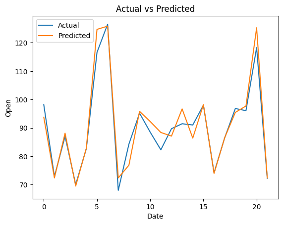

UAS PSD#
import yfinance as yf
import pandas as pd
# Ambil data AMD dari Finance Yahoo
data = yf.download('AMD', start='2023-01-01', end='2023-06-15')
# Simpan data
data.to_csv('data_amd.csv', index=False)
# Menampilkan data
print(data)
[*********************100%***********************] 1 of 1 completed
Open High Low Close Adj Close \
Date
2023-01-03 66.000000 66.879997 63.590000 64.019997 64.019997
2023-01-04 65.000000 65.790001 63.310001 64.660004 64.660004
2023-01-05 64.150002 64.349998 62.299999 62.330002 62.330002
2023-01-06 63.150002 64.300003 60.049999 63.959999 63.959999
2023-01-09 66.220001 69.320000 65.669998 67.239998 67.239998
... ... ... ... ... ...
2023-06-08 118.300003 122.209999 117.050003 121.050003 121.050003
2023-06-09 123.570000 127.250000 123.550003 124.919998 124.919998
2023-06-12 128.520004 130.479996 126.400002 129.190002 129.190002
2023-06-13 132.320007 132.830002 122.449997 124.529999 124.529999
2023-06-14 126.529999 127.730003 123.809998 127.330002 127.330002
Volume
Date
2023-01-03 46851800
2023-01-04 47477100
2023-01-05 46159500
2023-01-06 70161300
2023-01-09 69741300
... ...
2023-06-08 65246900
2023-06-09 75051600
2023-06-12 85394700
2023-06-13 132461900
2023-06-14 95716400
[113 rows x 6 columns]
import matplotlib.pyplot as plt
data.plot()
<Axes: xlabel='Date'>

data.shape
(113, 6)
data_open=data['Open']
# transform univariate time series to supervised learning problem
from numpy import array
# split a univariate sequence into samples
def split_sequence(sequence, n_steps):
X, y = list(), list()
for i in range(len(sequence)):
# find the end of this pattern
end_ix = i + n_steps
# check if we are beyond the sequence
if end_ix > len(sequence)-1:
break
# gather input and output parts of the pattern
# print(i, end_ix)
seq_x, seq_y = sequence[i:end_ix], sequence[end_ix]
X.append(seq_x)
y.append(seq_y)
return array(X), array(y)
n_steps = 5
X, y = split_sequence(data_open, n_steps)
# column names to X and y data frames
df_X = pd.DataFrame(X, columns=['t-'+str(i) for i in range(n_steps-1, -1,-1)])
df_y = pd.DataFrame(y, columns=['t+1 (prediction)'])
# concat df_X and df_y
df = pd.concat([df_X, df_y], axis=1)
# df_X.head()
# df_y.head()
df.head(3)
| t-4 | t-3 | t-2 | t-1 | t-0 | t+1 (prediction) | |
|---|---|---|---|---|---|---|
| 0 | 66.000000 | 65.000000 | 64.150002 | 63.150002 | 66.220001 | 66.669998 |
| 1 | 65.000000 | 64.150002 | 63.150002 | 66.220001 | 66.669998 | 68.389999 |
| 2 | 64.150002 | 63.150002 | 66.220001 | 66.669998 | 68.389999 | 70.070000 |
from sklearn.preprocessing import MinMaxScaler
scaler= MinMaxScaler()
X_norm= scaler.fit_transform(df_X)
# y_norm= scaler.fit_transform(df_y)
X_norm
array([[0.04236656, 0.02750109, 0.01486547, 0. , 0. ],
[0.02750109, 0.01486547, 0. , 0.04563698, 0.00680782],
[0.01486547, 0. , 0.04563698, 0.0523264 , 0.03282902],
[0. , 0.04563698, 0.0523264 , 0.07789502, 0.05824505],
[0.04563698, 0.0523264 , 0.07789502, 0.10286901, 0.05476543],
[0.0523264 , 0.07789502, 0.10286901, 0.09944991, 0.07034797],
[0.07789502, 0.10286901, 0.09944991, 0.11476143, 0.08547657],
[0.10286901, 0.09944991, 0.11476143, 0.1296269 , 0.04160363],
[0.09944991, 0.11476143, 0.1296269 , 0.08651702, 0.02708019],
[0.11476143, 0.1296269 , 0.08651702, 0.07224618, 0.09077155],
[0.1296269 , 0.08651702, 0.07224618, 0.13482979, 0.11391828],
[0.08651702, 0.07224618, 0.13482979, 0.15757394, 0.101059 ],
[0.07224618, 0.13482979, 0.15757394, 0.14493832, 0.1555219 ],
[0.13482979, 0.15757394, 0.14493832, 0.19845398, 0.1131618 ],
[0.15757394, 0.14493832, 0.19845398, 0.15683062, 0.12118005],
[0.14493832, 0.19845398, 0.15683062, 0.16470942, 0.09137671],
[0.19845398, 0.15683062, 0.16470942, 0.13542442, 0.18532525],
[0.15683062, 0.16470942, 0.13542442, 0.22773897, 0.27337365],
[0.16470942, 0.13542442, 0.22773897, 0.31425599, 0.30922845],
[0.13542442, 0.22773897, 0.31425599, 0.34948719, 0.27851731],
[0.22773897, 0.31425599, 0.34948719, 0.31931019, 0.27382749],
[0.31425599, 0.34948719, 0.31931019, 0.31470194, 0.29742805],
[0.34948719, 0.31931019, 0.31470194, 0.33789203, 0.29742805],
[0.31931019, 0.31470194, 0.33789203, 0.33789203, 0.24311646],
[0.31470194, 0.33789203, 0.33789203, 0.28452505, 0.23222386],
[0.33789203, 0.33789203, 0.28452505, 0.2738219 , 0.24931913],
[0.33789203, 0.28452505, 0.2738219 , 0.29061984, 0.28562777],
[0.28452505, 0.2738219 , 0.29061984, 0.32629698, 0.25355523],
[0.2738219 , 0.29061984, 0.32629698, 0.29478226, 0.20242051],
[0.29061984, 0.32629698, 0.29478226, 0.24453691, 0.16535551],
[0.32629698, 0.29478226, 0.24453691, 0.20811656, 0.1620272 ],
[0.29478226, 0.24453691, 0.20811656, 0.20484613, 0.21800295],
[0.24453691, 0.20811656, 0.20484613, 0.25984832, 0.17443264],
[0.20811656, 0.20484613, 0.25984832, 0.21703581, 0.20302567],
[0.20484613, 0.25984832, 0.21703581, 0.24513154, 0.17624812],
[0.25984832, 0.21703581, 0.24513154, 0.21881971, 0.18653556],
[0.21703581, 0.24513154, 0.21881971, 0.22892823, 0.17170949],
[0.24513154, 0.21881971, 0.22892823, 0.21436003, 0.21452343],
[0.21881971, 0.22892823, 0.21436003, 0.25642933, 0.239183 ],
[0.22892823, 0.21436003, 0.25642933, 0.28066 , 0.22465956],
[0.21436003, 0.25642933, 0.28066 , 0.26638916, 0.25068076],
[0.25642933, 0.28066 , 0.26638916, 0.29195779, 0.28850224],
[0.28066 , 0.26638916, 0.29195779, 0.32912146, 0.2760968 ],
[0.26638916, 0.29195779, 0.32912146, 0.31693178, 0.22950071],
[0.29195779, 0.32912146, 0.31693178, 0.27114611, 0.26399388],
[0.32912146, 0.31693178, 0.27114611, 0.30503936, 0.31089249],
[0.31693178, 0.27114611, 0.30503936, 0.35112229, 0.3555219 ],
[0.27114611, 0.30503936, 0.35112229, 0.39497549, 0.46051437],
[0.30503936, 0.35112229, 0.39497549, 0.49814187, 0.45506806],
[0.35112229, 0.39497549, 0.49814187, 0.4927903 , 0.46565803],
[0.39497549, 0.49814187, 0.4927903 , 0.50319608, 0.44523446],
[0.49814187, 0.4927903 , 0.50319608, 0.48312772, 0.51180028],
[0.4927903 , 0.50319608, 0.48312772, 0.5485358 , 0.49863837],
[0.50319608, 0.48312772, 0.5485358 , 0.5356028 , 0.48108915],
[0.48312772, 0.5485358 , 0.5356028 , 0.51835881, 0.46217841],
[0.5485358 , 0.5356028 , 0.51835881, 0.49977697, 0.45158844],
[0.5356028 , 0.51835881, 0.49977697, 0.48937119, 0.48078662],
[0.51835881, 0.49977697, 0.48937119, 0.51806155, 0.45567311],
[0.49977697, 0.48937119, 0.51806155, 0.49338481, 0.46111941],
[0.48937119, 0.51806155, 0.49338481, 0.49873639, 0.46626319],
[0.51806155, 0.49338481, 0.49873639, 0.50379071, 0.42556724],
[0.49338481, 0.49873639, 0.50379071, 0.46380256, 0.38199694],
[0.49873639, 0.50379071, 0.46380256, 0.42099006, 0.37972763],
[0.50379071, 0.46380256, 0.42099006, 0.41876021, 0.45143712],
[0.46380256, 0.42099006, 0.41876021, 0.4892225 , 0.43494701],
[0.42099006, 0.41876021, 0.4892225 , 0.4730192 , 0.40196668],
[0.41876021, 0.4892225 , 0.4730192 , 0.44061247, 0.38729192],
[0.4892225 , 0.4730192 , 0.44061247, 0.42619295, 0.36323752],
[0.4730192 , 0.44061247, 0.42619295, 0.40255691, 0.38411493],
[0.44061247, 0.42619295, 0.40255691, 0.42307121, 0.33721632],
[0.42619295, 0.40255691, 0.42307121, 0.37698828, 0.34205747],
[0.40255691, 0.42307121, 0.37698828, 0.38174523, 0.35673222],
[0.42307121, 0.37698828, 0.38174523, 0.39616475, 0.33116486],
[0.37698828, 0.38174523, 0.39616475, 0.37104207, 0.31285928],
[0.38174523, 0.39616475, 0.37104207, 0.35305487, 0.30695914],
[0.39616475, 0.37104207, 0.35305487, 0.34725735, 0.3054463 ],
[0.37104207, 0.35305487, 0.34725735, 0.34577082, 0.31467464],
[0.35305487, 0.34725735, 0.34577082, 0.35483865, 0.37534032],
[0.34725735, 0.34577082, 0.35483865, 0.41444921, 0.34947044],
[0.34577082, 0.35483865, 0.41444921, 0.38902928, 0.2620272 ],
[0.35483865, 0.41444921, 0.38902928, 0.30310689, 0.23222386],
[0.41444921, 0.38902928, 0.30310689, 0.2738219 , 0.28396361],
[0.38902928, 0.30310689, 0.2738219 , 0.32466177, 0.35960657],
[0.30310689, 0.2738219 , 0.32466177, 0.39898911, 0.43373669],
[0.2738219 , 0.32466177, 0.39898911, 0.47182993, 0.45688342],
[0.32466177, 0.39898911, 0.47182993, 0.49457408, 0.48320725],
[0.39898911, 0.47182993, 0.49457408, 0.52044008, 0.4630862 ],
[0.47182993, 0.49457408, 0.52044008, 0.50066898, 0.43842652],
[0.49457408, 0.52044008, 0.50066898, 0.47643819, 0.47155817],
[0.52044008, 0.50066898, 0.47643819, 0.5089936 , 0.538124 ],
[0.50066898, 0.47643819, 0.5089936 , 0.57440168, 0.57125565],
[0.47643819, 0.5089936 , 0.57440168, 0.6069571 , 0.60726166],
[0.5089936 , 0.57440168, 0.6069571 , 0.64233687, 0.58184562],
[0.57440168, 0.6069571 , 0.64233687, 0.61736288, 0.6207261 ],
[0.6069571 , 0.64233687, 0.61736288, 0.65556713, 0.60151284],
[0.64233687, 0.61736288, 0.65556713, 0.63668803, 0.77291969],
[0.61736288, 0.65556713, 0.63668803, 0.8051137 , 0.85083196],
[0.65556713, 0.63668803, 0.8051137 , 0.88167089, 0.97125554],
[0.63668803, 0.8051137 , 0.88167089, 1. , 0.8502268 ],
[0.8051137 , 0.88167089, 1. , 0.88107625, 0.77261717],
[0.88167089, 1. , 0.88107625, 0.80481644, 0.82496208],
[1. , 0.88107625, 0.80481644, 0.85625095, 0.76202709],
[0.88107625, 0.80481644, 0.85625095, 0.79441055, 0.78199694],
[0.80481644, 0.85625095, 0.79441055, 0.81403307, 0.87458385],
[0.85625095, 0.79441055, 0.81403307, 0.90500967, 0.78789708],
[0.79441055, 0.81403307, 0.90500967, 0.8198306 , 0.86762471],
[0.81403307, 0.90500967, 0.8198306 , 0.89817157, 0.94251131],
[0.90500967, 0.8198306 , 0.89817157, 0.9717557 , 1. ]])
from sklearn.model_selection import train_test_split
X_train, X_test, y_train, y_test = train_test_split(X_norm, y, test_size=0.2, random_state=0)
# import knn
from sklearn.ensemble import RandomForestRegressor
from sklearn.metrics import mean_squared_error
from sklearn.neighbors import KNeighborsRegressor
model_knn = KNeighborsRegressor(n_neighbors=5)
model_knn.fit(X_train, y_train)
y_pred=model_knn.predict(X_test)
print('R-Squared:', model_knn.score(X_test, y_pred))
R-Squared: 1.0
from sklearn.metrics import mean_absolute_percentage_error
# Mengubah dimensi y_pred menjadi satu dimensi
y_pred = y_pred.flatten()
# Mengambil jumlah sampel yang sesuai
n_samples = min(len(y_test), len(y_pred))
y_test = y_test[:n_samples]
y_pred = y_pred[:n_samples]
# Menghitung MAPE
mape = mean_absolute_percentage_error(y_test, y_pred)
print('MAPE:', mape)
MAPE: 0.030004537576070852
# Membuat grafik MAPE
plt.plot(y_test, label='Actual')
plt.plot(y_pred, label='Predicted')
plt.xlabel('Date')
plt.ylabel('Open')
plt.title('Actual vs Predicted')
plt.legend()
plt.show()

#Naive Bayes
from sklearn.naive_bayes import GaussianNB
from sklearn.metrics import mean_absolute_error
model_nb = GaussianNB()
model_nb.fit(X_train, y_train)
y_pred_nb = model_nb.predict(X_test)
mae_nb = mean_absolute_error(y_test, y_pred)
print('MAE (Naive Bayes):', mae_nb)
ValueErrorTraceback (most recent call last)
<ipython-input-17-b8a79458be54> in <cell line: 5>()
3
4 model_nb = GaussianNB()
----> 5 model_nb.fit(X_train, y_train)
6 y_pred_nb = model_nb.predict(X_test)
7
/usr/local/lib/python3.10/dist-packages/sklearn/naive_bayes.py in fit(self, X, y, sample_weight)
265 self._validate_params()
266 y = self._validate_data(y=y)
--> 267 return self._partial_fit(
268 X, y, np.unique(y), _refit=True, sample_weight=sample_weight
269 )
/usr/local/lib/python3.10/dist-packages/sklearn/naive_bayes.py in _partial_fit(self, X, y, classes, _refit, sample_weight)
425 self.classes_ = None
426
--> 427 first_call = _check_partial_fit_first_call(self, classes)
428 X, y = self._validate_data(X, y, reset=first_call)
429 if sample_weight is not None:
/usr/local/lib/python3.10/dist-packages/sklearn/utils/multiclass.py in _check_partial_fit_first_call(clf, classes)
418 else:
419 # This is the first call to partial_fit
--> 420 clf.classes_ = unique_labels(classes)
421 return True
422
/usr/local/lib/python3.10/dist-packages/sklearn/utils/multiclass.py in unique_labels(*ys)
105 _unique_labels = _FN_UNIQUE_LABELS.get(label_type, None)
106 if not _unique_labels:
--> 107 raise ValueError("Unknown label type: %s" % repr(ys))
108
109 if is_array_api:
ValueError: Unknown label type: (array([ 66.66999817, 68.38999939, 68.97000122, 69.83999634,
70.87000275, 71.87000275, 72.26000214, 73.69999695,
73.75 , 76.5 , 76.93000031, 77.15000153,
77.56999969, 77.75 , 77.87000275, 78.47000122,
78.55000305, 79.59999847, 79.63999939, 80.40000153,
80.62999725, 81.06999969, 81.38999939, 81.56999969,
82.02999878, 82.79000092, 82.98000336, 83.54000092,
83.66999817, 84.31999969, 84.47000122, 84.62999725,
84.98999786, 85.09999847, 85.29000092, 85.87999725,
86.41000366, 86.66000366, 86.76999664, 86.90000153,
88.11000061, 88.83000183, 89.31999969, 89.80000305,
89.98999786, 90.23000336, 91.31999969, 91.61000061,
91.81999969, 92.79000092, 94.34999847, 94.88999939,
94.97000122, 95.65000153, 96.05999756, 96.30000305,
96.33999634, 96.41999817, 96.66000366, 96.69999695,
96.76999664, 97. , 97.04000092, 97.38999939,
98. , 99.18000031, 100.05000305, 101.79000092,
103.98000336, 104.68000031, 105.98000336, 106.36000061,
107.25 , 117.29000092, 117.30999756, 117.91000366,
120.75 , 122.41999817, 122.45999908, 123.56999969,
124.02999878, 128.52000427, 130.41999817, 132.32000732]),)
#Decision Tree (Pohon Keputusan)
from sklearn.tree import DecisionTreeRegressor
from sklearn.metrics import mean_absolute_percentage_error
# Inisialisasi dan latih model Decision Tree
model_dt = DecisionTreeRegressor()
model_dt.fit(X_train, y_train)
# Prediksi pada data test
y_pred = model_dt.predict(X_test)
# Menghitung MAPE
mape = mean_absolute_percentage_error(y_test, y_pred)
print('MAPE:', mape)
#Multilayer Percptron (MLP)
from sklearn.neural_network import MLPRegressor
from sklearn.metrics import mean_absolute_percentage_error
# Inisialisasi dan latih model MLP
model_mlp = MLPRegressor()
model_mlp.fit(X_train, y_train)
# Prediksi pada data test
y_pred = model_mlp.predict(X_test)
# Menghitung MAPE
mape = mean_absolute_percentage_error(y_test, y_pred)
print('MAPE:', mape)